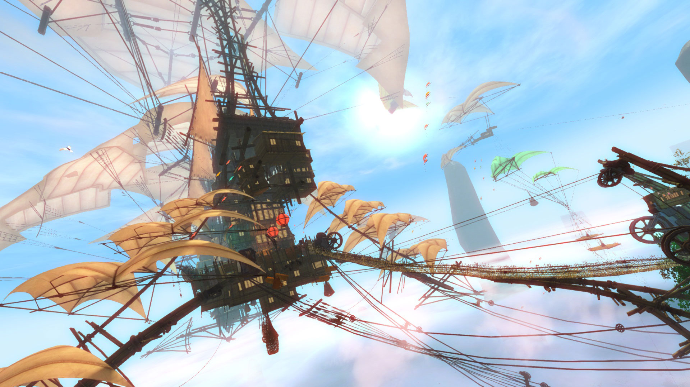

Newsy | Eventy Cykliczne
Festival of the Four Winds
Poniższy tekst został przygotowany na podstawie Festival of the Four Winds Begins Next Week!. Na portal markedbyfury.eu trafił za zgodę tłumacza, który opublikował tłumaczenie w ramach forum GuildWars2.pl.
W najbliższy wtorek 24 lipca nadciąga wielka letnia impreza - Festiwal Czterech Wiatrów! Wspólny wysiłek Jej Królewskiej Mości Królowej Jenny z Kryty, Zefirytów, Lwiej Gwardii, a nawet Black Lion Trading Company. Ponownie odwiedzimy "The Crown Pavilion" i "Labyrinthine Cliffs".
The Crown Pavilion
Królowa Jennah we własnej osobie będzie przewodniczyć uroczystościom w Divinity Reach, gdzie ambitni wojownicy będą mogli zmierzyć się w "Crown Pavilion", aby zdobyć prestiż i nagrody. Dołącz do walki aby pokonać "złowrogich złoczyńców"* i rywalizować w pojedynkach jeden na jednego ze sławnymi pretendentami w "Queen's Gauntlet".
The Labyrinthine Cliffs
Handlarze, rzemieślnicy i inne fascynujące i tajemnicze osoby zgromadziły się na "Bazaar of the Four Winds". Zrelaksuj się na plaży, zdobywaj "sky crystals", handluj towarami lub po prostu zacznij cicho obserwować ludzi. Pamiętaj, aby zabrać swojego griffona na spacer po klifach.
Aby poczuć ducha festiwalu, został stworzona paczka z tapetami i muzyką "Festival of the Four Winds", a także kilka nowych zrzutów ekranu. Możesz ją pobrać tutaj.
* Złoczyńcy i ich pogardliwi rodacy są reprezentowani przez nowy, ulepszony i całkowicie bezpieczny system Watchknight Mk II.
Poniższy film prezentujący Festival of the Four Winds pochodzi z 2014 roku. Aktualny festiwal zaczyna się 24 lipca, jak zostało to nadmienione powyżej.